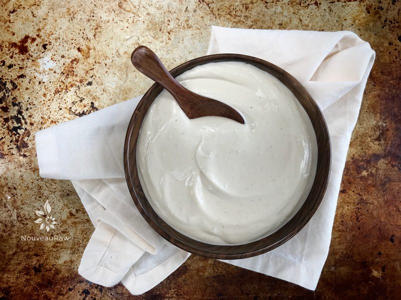

Dairy-Free Sour Cream – cashew based
RAW / VEGAN / GLUTEN-FREE
If you are aiming to eat a high raw diet and/or don’t eat dairy products… this is a perfect replacement. My sister LOVES sour cream and that might even be putting it mildly. The other day while she was visiting, I asked her to give this a try.

I will be honest, I held my breath, crossed my fingers and even crossed my toes… She dipped the spoon into the bowl, raised it to her lips, they parted… the spoon went in… the spoon came out… she raised her eyebrows… she smiled! she LIKED it, she really liked it! Shew! My sis can be a tough sell so after receiving her stamp of approval, I had an extra bounce in my step for the rest of the day. :)
INGREDIENTS
So what makes this “sour cream” so special? Cashews! Once soaked, the cashews blend into the creamiest texture. They also have a very neutral flavor which is the perfect foundation to add a few more ingredients to make this taste much like real cream cheese. And did you know that cashews are rich in copper, which helps in the metabolism of iron, aids in the formation of red blood cells, and helps in keeping the bones and immune system healthy? It is also vital for the nervous and skeletal system of the body. A deficiency of copper in the body may result in osteoporosis, irregular heartbeats, and anemia. (source)
TECHNIQUE
The ingredients are simple and so is the technique but there is one key bit of info that we must talk about. And that is the blender. You will want to use a high-powered blender to create that ultimate sour cream texture. Lumpy sour cream just won’t cut it. If you own a lower end model, it may take a tad bit longer to blend. If the mixture starts to get too warm during the blending process, turn the unit off and let things cool down before proceeding.
The best way to test the texture is to rub a bit of the mixture between your thumb and forefinger. If you detect any grit, keep blending. You can substitute cashews for the almonds, but the soak time will be a bit longer and you will need to remove their skins after soaking. Either nut works beautifully. I hope you enjoy this simple yet delicious recipe. blessings, amie sue
Oh, I must share… see the wooden bowl in the photos? My husband, Bob, turned out that bowl on our lathe. My grandfather taught us both to make pens on a lathe and it was long after that were we took lessons on how to create bowls. Never stiffle creativity! You never know were it might present itself.
 Ingredients:
Ingredients:
Yields 1 3/4 cup
- 1 cup (140 g) cashews, soaked 2+ hours
- 1/2 cup (100 g) water
- 1/4 cup (50 g) raw apple cider vinegar
- 1 tsp (4 g) onion powder
- 1/2 tsp (4 g) Himalayan pink salt
Preparation:
- After soaking the cashews, drain and rinse.
- The purpose of soaking the cashews is to remove some of the phytic acid (which will help with digestion) and to soften them so they will blend into a smooth cream.
- In a high-powered blender combine the cashews, water, apple cider vinegar, onion powder, and salt.
- Blend until creamy and you don’t feel any grit when you rub it between your fingers.
- Depending on the blender, this process can take 1-4 minutes.
- If you don’t have apple cider vinegar you can use coconut vinegar or lemon juice.
- Store in an airtight container in the fridge for 5-7 days.
© AmieSue.com